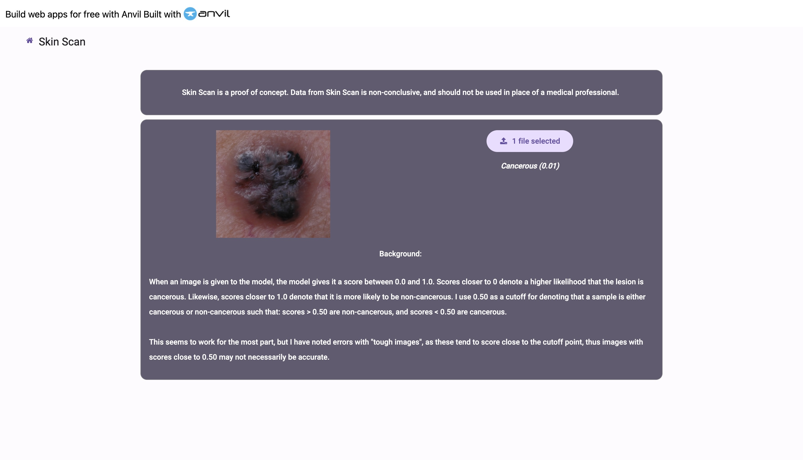
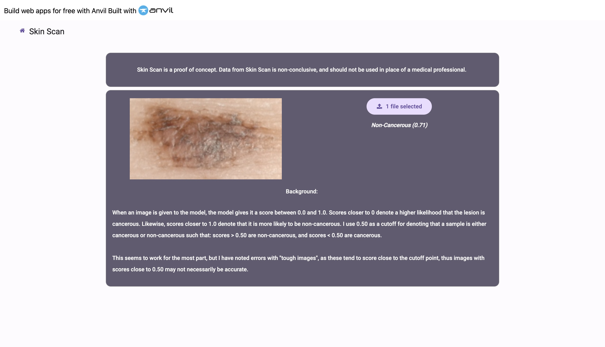
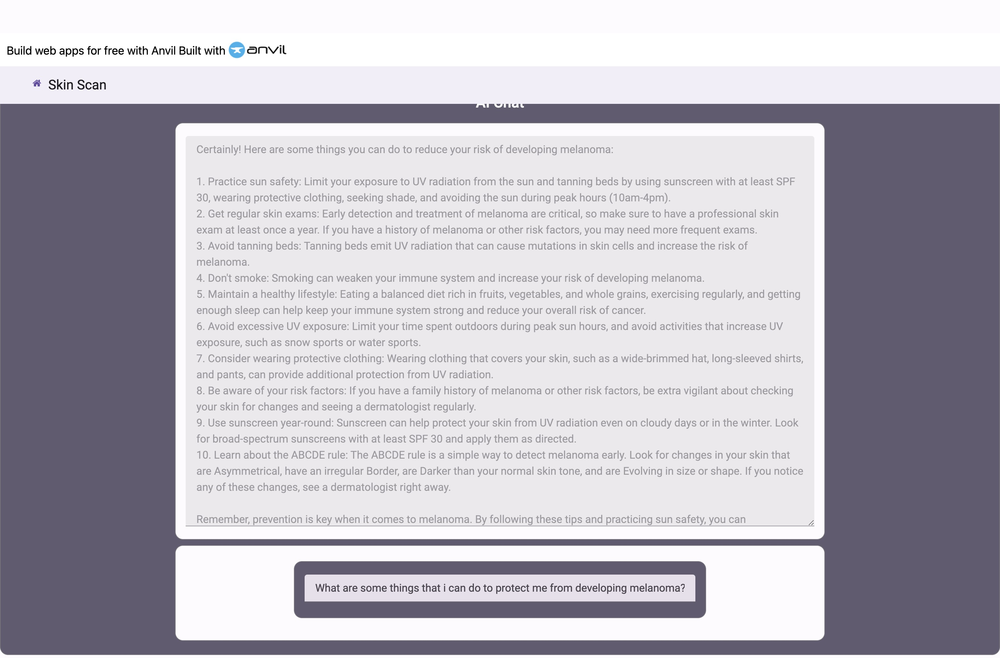

SkinScan
Skin scan was a proof of concept application, that explored how ML and AI can be used in medical applications.
I created Skin Scan, alongside my group members as a part of WPI’s Great Problems Seminar Class, wherein students are tasked with “solving problems of global importance”. The class is a semester long class, where first year students are “immerse(d) into university-level research and introduces them to the project-based curriculum at WPI.”
For our group, our focus was regarding the inequitity in Melanona diagnosis, specifcally regarding Black Americans. We found that there was a 25% difference between the survial rate between Black Americans and their white counterparts when it came to Melanoma (from 92% 5 year survival rate for White Americans, to 67% for Black Americans.)
We found that this was mainly due to three factors:
Example of a Cancerous Sample
Example of a Non Cancerous Sample
Furthermore, Skin Scan incorportated AI Large Language Models (specifically LLama2, via Ollama and LangChain incorportation) to act as an educational chatbot, wherein users could ask questions such as “What are some actions that I can take to prevent melanoma?”, and “What are the five warning signs related to melanoma?
